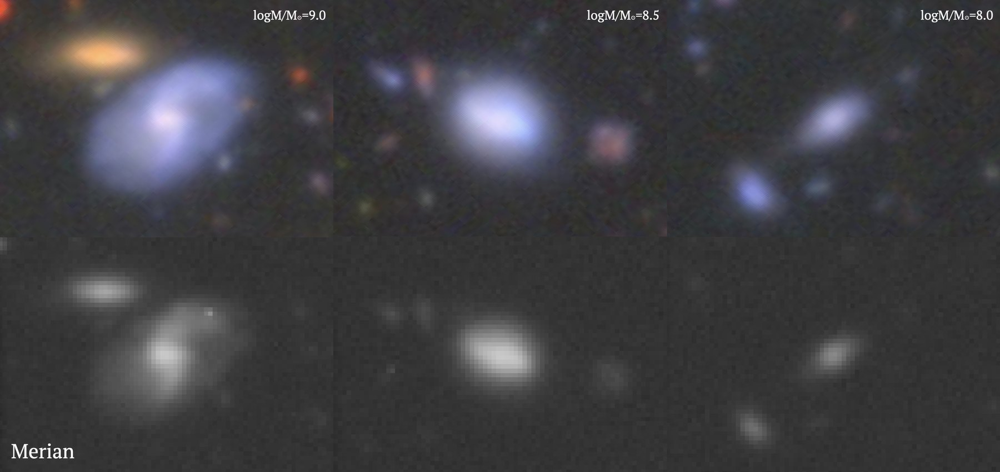

I
The dark matter halos of dwarfs
Stacking the weak lensing signal around tens of thousands of dwarfs measures their average dark matter density profile out to the virial radius.
Dark matterDark Energy Camera · Blanco 4-m · Cerro Tololo
The Merian Survey imaged about 750 square degrees of sky through two custom-built medium-band filters. Together with deep Hyper Suprime-Cam imaging, the filters pick out roughly 100,000 dwarf galaxies at redshifts between 0.06 and 0.10, enough to measure their dark matter halos with weak gravitational lensing.
How it works
Dwarf galaxies are faint, and spectroscopic surveys only reach complete samples of them very nearby. Merian takes a different route.
Star-forming dwarfs shine brightly in a handful of emission lines. At redshifts between 0.06 and 0.10 the Hα line shifts into the N708 filter and the [O III] λ5007 line shifts into N540. A galaxy that is brighter in both medium bands than in the HSC broad bands around them is very likely a dwarf in this redshift window.
Drag the redshift slider to watch the lines move through the filters.
Science
Stacking the weak lensing signal around tens of thousands of dwarfs measures their average dark matter density profile out to the virial radius.
Dark matterPhotometric redshifts reveal faint companions and satellites, and with them the build-up of low-mass galaxies.
Mass assemblyThe N708 filter isolates Hα, so every Merian image is also a map of where a galaxy is forming stars.
Star formationThe galaxies

Publications
The name
1647–1717
The survey honors Maria Sibylla Merian, the 17th-century naturalist and illustrator. Her fascination with the world of tiny things, combined with exceptional skill as an observer, led her to document the metamorphosis of caterpillars into butterflies in meticulous detail.
Merian the survey studies small things too. The theme carries through to the software the team has written along the way, with tools named caterpillar, skipper, carpenter, wasp and maria.